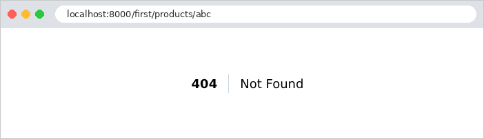
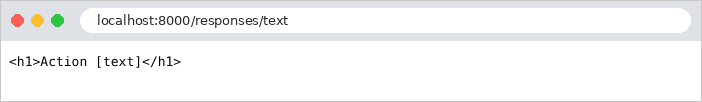

2. Actions, roteamento, respostas
Este capítulo examina o caminho que uma requisição percorre, do navegador até a action que a processa, e a resposta que essa action devolve. As views só serão tratadas no Capítulo 4: aqui, as actions devolvem texto ou JSON diretamente.
2.1. Exemplo 01: a estrutura de uma aplicação Laravel
O primeiro exemplo é a menor aplicação [Laravel] possível. Um projeto criado por [composer create-project laravel/laravel] contém cerca de cinquenta arquivos e pastas (veja a introdução); aqui, manteremos apenas aqueles de que a aplicação não pode prescindir:
- [public/index.php]: o ponto de entrada da aplicação. Todas as requisições HTTP, qualquer que seja a URL, são tratadas por este arquivo. A pasta [public] é a única que o servidor web serve: ela também contém os arquivos estáticos (folhas de estilo, imagens, scripts), e somente eles;
- [bootstrap/app.php]: a construção e a configuração da aplicação. A pasta [bootstrap/cache] recebe arquivos que o [Laravel] calcula por conta própria para iniciar mais rápido;
- [routes/web.php]: a tabela de rotas, que associa cada URL à action que a processa;
- [storage]: os arquivos que a aplicação grava durante o funcionamento: o log de erros ([storage/logs]), as sessões, o cache e as views compiladas ([storage/framework]);
- [.env]: a configuração da aplicação, na forma de pares [NAME=value];
- [artisan]: a ferramenta de linha de comando do [Laravel];
- [composer.json]: a descrição do projeto para o [Composer].
2.1.1. O ponto de entrada: public/index.php
- Linha 1: um arquivo [PHP] começa com a tag [<?php]. Tudo o que vem depois é código [PHP]; um arquivo que contém apenas código não fecha essa tag;
- linha 2: um comentário, de [//] até o fim da linha ([/* ... */] delimita um comentário de várias linhas);
- linha 4: a instrução [use] importa o nome de uma classe. O nome completo de uma classe [PHP] inclui seu namespace (*namespace*), o equivalente aos pacotes do [Java]: [Illuminate\Http\Request] é a classe [Request] no namespace [Illuminate\Http]. Depois de [use], o arquivo pode referir-se a ela simplesmente como [Request]. [Illuminate] é o codinome dos componentes do [Laravel];
- Linha 7: [require] executa outro arquivo [PHP]. [__DIR__] é o diretório do arquivo atual (aqui, [public]); o operador [.] concatena duas strings. O arquivo [vendor/autoload.php], escrito pelo [Composer], instala o carregador de classes: na primeira vez que uma classe é usada, ele encontra e carrega o arquivo que a define. Graças a isso, nunca precisamos escrever um [require] para as classes. A pasta [vendor] é a da pasta [examples], compartilhada por todos os exemplos (veja a introdução): daí os dois [..];
- Linha 10: um arquivo executado por [require] pode retornar um valor com a instrução [return]: [bootstrap/app.php] retorna a aplicação — um objeto da classe [Illuminate\Foundation\Application] — armazenada na variável [$app]. No [PHP], os nomes de variáveis sempre começam com [$]. [require_once] não faria nada se o arquivo já tivesse sido executado;
- linha 11: [Request::capture()] chama o método estático [capture] da classe [Request] (o operador [::] refere-se a um membro de uma classe, enquanto o operador [->] refere-se a um membro de um objeto). Ele cria um objeto [Request] a partir da requisição HTTP recebida pelo [PHP]. [$app->handleRequest(...)] faz a aplicação processar essa requisição e envia a resposta ao navegador.
Este arquivo é o mesmo em todos os exemplos e — com exceção de dois [..] — é idêntico ao de um projeto [Laravel] padrão. Ele evidencia uma particularidade do [PHP], que explica muita coisa sobre o [Laravel]: a aplicação é reconstruída a cada requisição. O servidor web executa [public/index.php] do início ao fim para cada requisição que recebe: carrega as classes, constrói a aplicação, processa a requisição, envia a resposta e então esquece tudo. Nenhum objeto sobrevive de uma requisição para a seguinte. No capítulo sobre escopos de dados, veremos as consequências desse comportamento, que é o oposto do [Java], do [C#] ou do [Python], cujas aplicações permanecem na memória entre as requisições.
2.1.2. A estrutura da aplicação: bootstrap/app.php
- Linha 7: o carregador de classes do [Composer] conhece as classes das bibliotecas localizadas na pasta [vendor]. Ele também precisa conhecer as classes da aplicação, que por convenção ficam em sua pasta [app], sob o namespace [App]. Em um projeto padrão, o [Composer] obtém essa informação do arquivo [composer.json] do projeto. Nossos exemplos compartilham uma única pasta [vendor], mas cada um tem sua própria pasta [app]: cada exemplo, portanto, a declara ele mesmo ao carregador, por meio de seu método [addPsr4] (o padrão [PSR-4] mapeia namespaces para pastas: a classe [App\Http\Controllers\FirstController] está no arquivo [app/Http/Controllers/FirstController.php]). Um [require] retorna o valor do arquivo executado; [vendor/autoload.php] retorna o carregador (ele o instala uma única vez, mesmo que executado duas vezes). Em uma string entre aspas simples, [\\] designa um único caractere, [\]. Este exemplo ainda não tem uma pasta [app]: a linha está aí para os exemplos seguintes;
- linha 9: a construção da aplicação. [Application::configure(...)] retorna um objeto builder (*builder*), cujos métodos configuram cada um um aspecto da aplicação e retornam o próprio builder, permitindo encadear as chamadas; [create()] constrói por fim a aplicação. O parâmetro [basePath: dirname(__DIR__)] é um parâmetro nomeado: o valor é associado ao parâmetro [basePath] pelo nome, e não pela posição. [dirname(__DIR__)] é a pasta pai de [bootstrap] — isto é, a pasta do exemplo: é a partir dela que o [Laravel] localiza todas as demais ([routes], [storage]...);
- Linha 11: as rotas da aplicação são as do arquivo [routes/web.php]. O nome [web] é significativo: essas rotas recebem os middleware do grupo [web] (sessões, cookies criptografados, proteção anti-CSRF etc.), adequados a uma aplicação que gera páginas HTML. Voltaremos a eles ao longo dos capítulos;
- linhas 13–14: o middleware e o tratamento de exceções, com suas configurações padrão. Vamos detalhá-los nos exemplos seguintes.
2.1.3. A tabela de rotas: routes/web.php
- linha 4: importação da classe [Route]. Ela é uma fachada do [Laravel]: uma classe cujos métodos estáticos ([Route::get]) repassam a chamada a um objeto da aplicação, no caso o roteador. As fachadas são uma das marcas registradas do [Laravel]: dão acesso rápido aos serviços da aplicação sem a necessidade de obter o objeto que os fornece;
- Linhas 7–10: [Route::get] declara uma rota: as requisições [GET /] serão tratadas pela função indicada como segundo parâmetro. Isso é o roteamento. Essa função não tem nome: é uma função anônima — um valor como qualquer outro — que pode ser passado como parâmetro. A função associada a uma rota é uma action. Existem também [Route::post], [Route::put], [Route::delete]...;
- linha 9: a action retorna uma string. O valor retornado por uma action é a resposta enviada ao navegador: o [Laravel] a coloca no corpo da resposta HTTP. Uma string entre aspas simples (['...']) é escrita como está; entre aspas duplas (["..."]), as variáveis que ela contém são substituídas por seus valores (por exemplo, 02).
2.1.4. Configuração: .env
O arquivo [.env] contém configurações específicas de uma instalação da aplicação: a mesma aplicação, instalada na máquina de um desenvolvedor e em um servidor de produção, não terá o mesmo [.env]. Além disso, esse arquivo não deve ser publicado com o código-fonte (ele contém segredos). As linhas que começam com [#] são comentários.
- Linha 2: o nome da aplicação. O [Laravel] o usa, por exemplo, para nomear o cookie de sessão ([example01_session], abaixo);
- linha 4: o ambiente: [local] para desenvolvimento, [production] em um servidor;
- linha 6: a chave secreta da aplicação: 32 bytes aleatórios, codificados em base 64. O [Laravel] a usa para criptografar cookies e assinar certos dados (voltaremos a isso). Ela é criada pelo comando [php artisan key:generate], que a grava no arquivo [.env]; cada exemplo tem a sua. Sem ela, a aplicação se recusa a iniciar (“No application encryption key has been specified”);
- linha 8: o modo de depuração: uma exceção não tratada exibe uma página detalhada (veja o Exemplo 03). Esse modo se destina ao desenvolvimento, e somente a ele: a página de erro revela o código-fonte e a configuração da aplicação;
- Linhas 10–11: as sessões e o cache (veja o capítulo sobre escopos) são armazenados em arquivos dentro da pasta [storage]. Por padrão, o [Laravel] os armazena em um banco de dados, que ainda não temos.
Tudo o que o [Laravel] não encontra no [.env] mantém seu valor padrão. Esses valores padrão são definidos pelos arquivos de configuração do framework ([vendor/laravel/framework/config/*.php]); um projeto padrão tem uma cópia deles em sua pasta [config], que pode ser modificada. Nossos exemplos dispensam essa cópia: algumas linhas do [.env] bastam.
2.1.5. A ferramenta artisan e o arquivo composer.json
O arquivo [artisan] é um script [PHP] que constrói a aplicação, assim como o [public/index.php], mas para executar um comando em vez de processar uma requisição:
- Linha 1: no [Linux] e no [macOS], esta linha permite executar o arquivo diretamente ([./artisan]); no [Windows], digita-se sempre [php artisan];
- Linha 13: [ArgvInput] representa os parâmetros da linha de comando ([serve], [route:list]...); [handleCommand] executa o comando e retorna seu código de saída.
[php artisan list] exibe a lista de comandos disponíveis: cerca de uma centena, dos quais usaremos alguns. Por fim, o arquivo [composer.json] descreve o exemplo:
Este é um documento JSON. O [Laravel] lê desse arquivo o namespace das classes da aplicação ([App\], localizado na pasta [app/]), do qual precisa, por exemplo, para distinguir o código da aplicação do código do framework em suas páginas de erro. O arquivo [composer.json] de um projeto padrão contém também a lista de suas bibliotecas; nos exemplos, essa lista está no arquivo [examples/composer.json] (veja a introdução).
2.1.6. Execução
Em uma janela de terminal aberta na pasta [01-structure], digite [php artisan serve]. O [Laravel] exibe:
O comando [serve] inicia o servidor de desenvolvimento integrado ao [PHP] ([php -S]), configurado para encaminhar todas as requisições a [public/index.php] (exceto as de arquivos situados na pasta [public], que ele envia como estão). Ele escuta na porta 8000 no endereço [127.0.0.1], que é o endereço da própria máquina ([localhost]): aceita apenas requisições vindas dessa máquina, o que é adequado ao desenvolvimento ([--host=0.0.0.0] o abriria para outras máquinas da rede; [--port=8001] mudaria a porta). Ele é interrompido por [Ctrl-C]. Esse servidor se destina ao desenvolvimento: em produção, será um servidor web como o [Apache] ou o [Nginx], associado ao [PHP-FPM] (veja o estudo de caso). Não é necessário reiniciá-lo após uma alteração de código: como o [PHP] relê os arquivos a cada requisição, a alteração passa a valer na requisição seguinte. Somente uma alteração no arquivo [.env] exige uma reinicialização, que o comando [serve] realiza automaticamente.
Vamos solicitar a URL [http://localhost:8000/] usando um navegador:
depois com o [curl]. A opção [-i] exibe também os cabeçalhos HTTP da resposta:
A primeira linha da resposta contém a versão do protocolo, o código de status (200) e seu rótulo ([OK]). Em seguida vêm os cabeçalhos: o host solicitado, [Connection: close] (o servidor de desenvolvimento fecha a conexão após cada resposta), a versão do [PHP], o tipo de conteúdo, uma diretiva de cache, a data e dois cookies. Uma linha vazia separa os cabeçalhos do corpo da resposta. No restante deste documento, não reproduziremos mais os cabeçalhos [Host], [Connection], [X-Powered-By], [Cache-Control] e [Date] — que não variam — nem os cookies, exceto quando forem o assunto do exemplo.
O cabeçalho [Content-Type: text/html; charset=utf-8] indica que a resposta é HTML, cujos caracteres são codificados em UTF-8. Essa é a codificação padrão (do [Laravel]) para qualquer string retornada por uma action: o navegador, portanto, interpreta a string como HTML (aqui, sem nenhuma tag, ela é exibida como está). O Exemplo 03 mostrará como especificar outro tipo de codificação.
Os dois cookies podem surpreender: a aplicação não solicitou nenhum deles. Eles são definidos por dois componentes middleware do grupo [web] (veja [bootstrap/app.php]): [example01_session] identifica a sessão do usuário, e [XSRF-TOKEN] contém o token anti-CSRF. Seus valores são criptografados com a chave [APP_KEY]. Vamos examiná-los nos Exemplos 20 e 21.
A cada requisição, o console do servidor exibe uma entrada de log: a data, o caminho solicitado e o tempo de processamento.
2.2. Exemplo 02: roteamento
O roteamento associa uma URL e um método HTTP (GET, POST...) a uma action. Escrever todas as actions em [routes/web.php] como funções anônimas logo se tornaria ilegível; em vez disso, elas são organizadas em classes — os controllers. O Exemplo 02 tem dois deles:
Os arquivos [artisan], [public/index.php], [composer.json] e [.env], bem como as pastas [bootstrap/cache] e [storage], são iguais aos do Exemplo 01: não voltaremos a mencioná-los (mudam apenas o nome do exemplo e a chave secreta). Cada controller é uma classe do namespace [App\Http\Controllers], localizada na pasta [app/Http/Controllers]: essa é a convenção do [Laravel], e o padrão [PSR-4] associa os dois (Exemplo 01).
2.2.1. O controller HomeController
- linha 4: o namespace da classe. Seu nome completo é, portanto, [App\Http\Controllers\HomeController];
- linha 6: a classe. Por convenção, o nome de uma classe é escrito com inicial maiúscula em cada palavra ([HomeController]), enquanto o nome de um método ou variável começa com letra minúscula ([action01Post]). Um controller do [Laravel] não precisa herdar de nenhuma classe;
- linha 10: a action [index], um método public da classe (o roteador só pode chamar métodos públicos). [: string] declara o tipo do valor retornado: uma string. Os tipos são opcionais no [PHP], mas, quando especificados, o [PHP] os verifica em tempo de execução;
- linhas 12–23: uma string de várias linhas. A sintaxe [<<<'HTML'] ... [HTML] (*nowdoc*) delimita um texto escrito como está, entre duas linhas contendo a mesma palavra, no caso [HTML]; a indentação da linha de fechamento é removida de todas as linhas. A action retorna HTML, enviado com o tipo [text/html] (veja o Exemplo 01).
A action [index] retorna, assim, uma página HTML que contém links para as actions do outro controller:

2.2.2. O controller FirstController
- linhas 9–11: o mesmo método [index] do outro controller: não há conflito, pois cada controller é uma classe diferente;
- linhas 21–23: a action da requisição [POST /first/action01]. O nome de uma action pode ser qualquer um; é a tabela de rotas que a associa a uma URL e a um método HTTP;
- linhas 28–30: o parâmetro [$id] da action recebe o valor do parâmetro de rota [{id}] (veja [routes/web.php]): para a URL [/first/products/17], ele é 17. O tipo de parâmetro [int] instrui o [PHP] a converter o valor (uma string extraída da URL) em um inteiro. Isso é o binding de dados, que será tratado em detalhe no próximo capítulo. Na string entre aspas ["Product no. $id"], a variável [$id] é substituída por seu valor: isso é a interpolação;
- linhas 34–36: dois parâmetros de rota, passados a dois parâmetros da action. O [Laravel] os associa por nome: a ordem dos parâmetros da action não importa;
- linhas 40–42: um parâmetro de rota que contém [/].
2.2.3. A tabela de rotas: routes/web.php
- Linhas 4–5: importação dos dois controllers;
- Linha 9: a action não é mais uma função anônima, mas um array com dois elementos: a classe do controller e o nome do método. [HomeController::class] é o nome completo da classe, como string (['App\Http\Controllers\HomeController']). Para cada requisição [GET /], o [Laravel] cria um objeto [HomeController] e chama seu método [index];
- linha 12: um grupo de rotas: as rotas declaradas na função passada a [group] compartilham as configurações do grupo. [prefix('first')] acrescenta [/first] ao início de seus caminhos; [controller(FirstController::class)] atribui a elas seu controller, e cada rota só precisa então nomear seu método. A URL de uma action é a concatenação do prefixo do grupo com o caminho de sua rota;
- linha 14: a rota ['/'] refere-se ao próprio prefixo: [GET /first];
- Linhas 16–18: o mesmo caminho HTTP corresponde a dois métodos: [GET] e [POST], tratados por duas actions diferentes. Existem também [Route::match(['get', 'post'], ...)], para uma action que trata vários métodos, e [Route::any], para todos eles;
- Linha 21: [{id}] é um parâmetro de rota: esse segmento da URL pode assumir vários valores. Por padrão, um parâmetro aceita qualquer texto sem barra; [whereNumber('id')] restringe o parâmetro a conter apenas dígitos: caso contrário, a rota não corresponde. Existem também [whereAlpha] (letras), [whereUuid], [whereIn('id', [...])] (uma lista de valores) e [where], que aceita uma expressão regular;
- linha 23: dois parâmetros de rota, ambos com restrição ([whereNumber] aceita um array de nomes). No [PHP], [[a, b]] é um array (*array*);
- linha 26: a restrição [where('path', '.*')] é uma expressão regular: [.] designa qualquer caractere, e [*] designa sua repetição. O parâmetro, portanto, aceita qualquer final de URL, inclusive [/].
2.2.4. A configuração: bootstrap/app.php
- Linhas 11–15: o método [withMiddleware] recebe desta vez uma função, que o [Laravel] chama passando-lhe o objeto [$middleware] que descreve o middleware da aplicação. [: void] indica que a função não retorna nada. Nós a usamos para desativar a proteção anti-CSRF da URL [/first/...]: essa proteção, que examinaremos no Exemplo 21, rejeita qualquer requisição POST que não venha de um formulário da aplicação — inclusive as que enviaremos com o [curl]. O parâmetro nomeado [except] especifica a lista de caminhos a excluir, em que [*] representa qualquer sequência de caracteres. Sem essa linha, a requisição POST do [curl] receberia uma resposta de erro 419 (*Page Expired*).
2.2.5. Execução
Eis as respostas a algumas requisições:
Para enviar uma requisição POST, use a opção [-X POST] do [curl]:
Um método HTTP que nenhuma action trata neste caminho resulta em um erro 405 ([Method Not Allowed]). O cabeçalho [allow] lista os métodos aceitos; o [Laravel] acrescenta [HEAD] (a mesma requisição que GET, sem o corpo da resposta), que ele mesmo trata para qualquer rota GET:
No modo de depuração, o corpo da resposta é a página de erro detalhada do [Laravel], que veremos no Exemplo 03: ela explica que o método PUT não é aceito para esta rota (“The PUT method is not supported for route first/action01. Supported methods: GET, HEAD, POST.”).
Por fim, uma URL que nenhuma rota trata resulta em um erro 404. É também o caso de um identificador que não é um número: a restrição [whereNumber] impede que a rota corresponda a [/first/products/abc].
A resposta é uma página de erro do [Laravel], em inglês. Em um navegador:

O Capítulo 7 mostrará como substituí-la por uma página específica da aplicação. Observe também que o [Laravel] não distingue [/first] de [/first/]: a barra final é ignorada pelo roteador, e as duas URLs levam à mesma action.
O comando [php artisan route:list], executado no diretório do exemplo, lista todas as rotas da aplicação:
Cada linha lista os métodos HTTP, o caminho e a action ([Controller@method]). As duas últimas rotas, chamadas [storage.local] e [storage.local.upload], são criadas pelo próprio [Laravel] : servem os arquivos que a aplicação armazena em sua pasta [storage/app], desde que acompanhados de uma assinatura (uma URL assinada, que somente a aplicação sabe gerar). Não as usaremos.
2.3. Exemplo 03: respostas de uma action
O que uma action retorna determina a resposta HTTP. O Exemplo 03 examina os principais casos:
A tabela de rotas associa cada URL [/responses/xxx] à action [xxx] do controller:
O controller [ResponsesController]:
Vamos comentar este código:
- Linhas 16–19: a função [response] constrói uma resposta HTTP completa, que é um objeto [Illuminate\Http\Response] cujo primeiro parâmetro é o corpo. O [Laravel] fornece muitas funções desse tipo, disponíveis em qualquer lugar, que ele chama de “helpers”: [response], [redirect], [abort], [view], [collect]... O método [header] define um cabeçalho da resposta — no caso, seu tipo: [text/plain] (texto simples). O navegador não interpretará as tags. [header] retorna a própria resposta: as chamadas se encadeiam;
- linhas 23–25: a mesma string, retornada isoladamente: o [Laravel] a envia com o tipo [text/html], e o navegador a interpreta;
- Linhas 29–31: [response()], chamada sem parâmetros, retorna uma fábrica de respostas, cujo método [json] converte seu parâmetro em JSON e gera uma resposta do tipo [application/json] (um objeto [JsonResponse]). A conversão é feita pela função [json_encode] do [PHP]: um objeto se torna um objeto JSON cujos campos são as propriedades public do objeto. A classe [Person] é descrita a seguir;
- linhas 35–37: mais simples ainda: uma action que retorna um array produz uma resposta JSON, sem chamar [response()->json]. O array [PHP] é uma estrutura de uso geral: [['lastName' => 'Martin', ...]] é um array associativo, em que cada elemento tem uma chave (aqui, ['lastName']); ele se torna um objeto JSON. Um objeto comum, por outro lado, não pode ser retornado sozinho: o [Laravel] tentaria convertê-lo em string, e a operação falharia (“Object of class App\Models\Person could not be converted to string”); é preciso passar por [response()->json];
- linhas 41–43: um array com chaves implícitas (0, 1, 2) é uma lista; ele se torna um array JSON;
- linhas 47–49: a função [collect] cria uma [Laravel] collection — um objeto que encapsula um array e fornece cerca de uma centena de métodos para transformá-lo — que são então encadeados: [sort] ordena os elementos, [values] renumera as chaves a partir de 0 e [map] aplica uma função a cada elemento. [fn (int $n) => $n * 10] é uma arrow function: uma função anônima reduzida a uma expressão, cujo valor ela retorna. Uma collection retornada por uma action também se torna um array JSON. Voltaremos às collections no contexto de bancos de dados no Capítulo 9;
- linhas 53–55: o segundo parâmetro de [json] é o código de status: 201 ([Created]) substitui o 200. Um terceiro parâmetro, opcional, forneceria cabeçalhos: [['X-Example' => '03']];
- linhas 59–61: o código 204 ([No Content]) significa “nada a exibir”: a resposta não tem corpo;
- linhas 65–67: um erro “esperado”: uma resposta 404 ([Not Found]), com um corpo (JSON) escolhido pela action;
- linhas 71–73: o mesmo erro, gerado pela função [abort]. [abort] não retorna nada: ela lança uma exceção ([NotFoundHttpException], para o código 404), que encerra a action; o [Laravel] a converte em uma resposta de erro. O tipo [never] indica que o método nunca termina normalmente. Essa é a forma mais comum de encerrar uma action por causa de um erro, mesmo no fundo de uma função chamada pela action;
- linhas 77–79: um erro “inesperado” — uma exceção que ninguém trata — produz uma resposta 500 ([Internal Server Error]). A instrução [throw] lança uma exceção; [RuntimeException] é uma classe de exceção da biblioteca padrão do [PHP], importada por um [use] (linha 10) como qualquer outra classe. A action não se chama [exception], como nas outras versões do curso: para o [Laravel], uma action chamada ['exception'] remeteria à classe [Exception] do [PHP] (os nomes de classes não diferenciam maiúsculas de minúsculas), e a rota seria rejeitada.
A classe [Person]:
- Linha 8: [readonly] torna todas as propriedades da classe não modificáveis depois de inicializadas: um objeto [Person] é imutável;
- Linhas 10–14: [__construct] é o construtor da classe, chamado por [new Person('Martin', 'Jean', 42)]. Seus parâmetros, precedidos de [public], são promovidos: cada um declara uma propriedade de mesmo nome, inicializada pelo parâmetro. Essa sintaxe evita declarar as propriedades e depois atribuí-las uma a uma no corpo do construtor (que aqui está vazio). As propriedades são públicas: [json_encode] pode acessá-las.
Resta o arquivo [bootstrap/app.php]:
- linha 15: um componente middleware é adicionado à aplicação: a classe [ReadableJson], mostrada a seguir.
Por padrão, o [Laravel] produz um JSON compacto, em uma única linha, no qual os caracteres não ASCII são escritos como sequências de escape: [créée] vira [cr\u00e9\u00e9e], o que é um JSON válido, mas pouco legível. Para os exemplos deste curso, queremos um JSON legível. Um middleware é uma classe cujo método [handle]*** é chamado a cada requisição, *envolvendo a action: [$next($request)] repassa a requisição ao restante da aplicação (os outros middleware e depois a action) e retorna a resposta (linha 17). O middleware pode então modificá-la: se for uma resposta JSON (o operador [instanceof] verifica a classe de um objeto), ele altera suas opções de codificação: os caracteres não ASCII e as barras são escritos como estão, e a saída é indentada (linha 21). O operador [|] combina as três opções, que são constantes do [PHP]. O capítulo sobre o ciclo de vida da requisição examinará o middleware em detalhe; os exemplos 05 a 12 reutilizam este.
Em um navegador, a diferença entre [text/plain] e [text/html] fica visível:


Eis as respostas das demais actions:
O objeto foi convertido em um objeto JSON, com um campo por propriedade pública. A action [/responses/array] produz exatamente a mesma resposta.
A resposta de [abort] é a página de erro 404 padrão do [Laravel], como mostrado no Exemplo 02. Nossa mensagem não aparece nela: a página padrão exibe apenas o código e seu rótulo. Ela aparece, porém, quando o cliente solicita uma resposta JSON, por meio do cabeçalho [Accept: application/json] (opção [-H] do [curl]): o [Laravel] então adapta suas respostas de erro, que passam a ser documentos JSON:
No modo de depuração, o documento JSON contém também o nome da exceção, o arquivo e a linha em que ela foi lançada e a pilha de chamadas (a lista de funções em execução no momento do erro). Sem o modo de depuração, ele contém apenas a mensagem. O Capítulo 7 mostrará como exibir a mensagem em uma página de erro personalizada.
Resta a exceção não tratada. No modo de depuração, o navegador exibe a página de erro do [Laravel]: o tipo e a mensagem da exceção, o arquivo e a linha em que foi lançada e, em seguida, a pilha de chamadas — da mais recente à mais antiga — com a linha de código relevante para cada uma:

A primeira entrada da pilha é a nossa action, [unexpectedError], na linha 79 do arquivo [ResponsesController.php]. Mais abaixo, a página exibe a requisição (seus cabeçalhos e parâmetros) e a aplicação (rotas e configurações): por isso o modo de depuração nunca deve ser ativado em um servidor acessível a outras pessoas. O botão “Copy as Markdown” copia a descrição do erro, pronta para ser colada em uma pergunta a uma IA. O erro também é gravado no log da aplicação, o arquivo [storage/logs/laravel.log] (mostramos aqui apenas o início):
Sem o modo de depuração ([APP_DEBUG=false] no [.env]), a mesma requisição produz uma página de erro breve, “500 | Server Error”, que não revela nada sobre o código; o erro é descrito apenas no log. O Capítulo 7 mostrará como exibir uma página de erro específica da aplicação.
2.4. Exemplo 04: redirecionamentos
Um redirecionamento é uma resposta que instrui o navegador a buscar outra URL: um código 3xx e o cabeçalho [Location], que contém o novo endereço. O navegador envia imediatamente uma segunda requisição a esse endereço. O controller [RedirectsController]:
- linhas 11–13: a função [redirect] gera uma resposta de redirecionamento (um objeto [RedirectResponse]) para o endereço especificado. O código 301 ([Moved Permanently]) significa que a página mudou definitivamente de endereço: o navegador (e os mecanismos de busca) podem memorizar o novo;
- linhas 23–25: sem um segundo parâmetro, [redirect] gera um redirecionamento temporário com código de status 302 ([Found]). A URL é construída concatenando fragmentos de texto (o operador [.]), o que causa um problema, como veremos;
- linhas 30–32: chamado sem parâmetro, [redirect()] retorna um objeto cujo método [route] cria um redirecionamento para uma rota, identificada por seu nome (['page']), e não por seu caminho. O array associativo fornece os parâmetros da rota (aqui, [name]), devidamente codificados para uma URL. Se o caminho da rota [page] for alterado um dia, os redirecionamentos para ela serão atualizados automaticamente;
- linhas 41–43: um redirecionamento para outro site. O método [away] usa o endereço tal como está.
Ela recebe um nome de rota na tabela de roteamento:
- linha 7: um grupo de rotas sem prefixo, que compartilham apenas o controller (exemplo 02);
- linha 13: o método [name] atribui um nome à rota. A função [route], disponível em qualquer lugar, gera a URL de uma rota nomeada: [route('page', ['name' => 'a?b'])] resulta em [http://localhost:8000/page/a%3Fb].
Os resultados, usando [curl] (que, sem opções, não segue redirecionamentos):
[Laravel] converteu o endereço [/new] em um endereço absoluto (incluindo o protocolo, o host e a porta), calculado a partir da requisição recebida. A resposta inclui também um corpo curto, em HTML, para um cliente que não siga redirecionamentos. A opção [-L] do [curl] segue o redirecionamento, exatamente como faria um navegador:
Vamos agora comparar os dois redirecionamentos calculados, com um destino que contém um ponto de interrogação, codificado como [%3F] na URL (um [?] não codificado iniciaria os parâmetros da URL):
[Laravel] decodificou o parâmetro de rota antes de processá-lo: [$destination] é igual a [a?b]. A primeira action o reinsere no endereço tal como está: [/page/a?b], que o navegador interpreta como o caminho [/page/a] seguido do parâmetro [b]. A segunda action segue a rota nomeada, cujo parâmetro é codificado novamente: [/page/a%3Fb]. Seguindo os redirecionamentos:
Somente o segundo leva à página correta. Daí a regra: um endereço que contém um valor variável é construído com [route], nunca por concatenação de strings. No navegador, apenas a página final é visível; a barra de endereço exibe a nova URL:
Existem outros dois códigos de redirecionamento: 303 ([See Other]) e 307 ([Temporary Redirect]), que são obtidos por meio de [redirect($url, 303)]. Após uma requisição POST, os códigos 302 e 303 fazem o navegador enviar uma requisição GET ao novo endereço, ao passo que o 307 (e o 308, a versão permanente) fazem com que ele repita a requisição POST. O exemplo 20 usará um redirecionamento após um POST.
2.5. Exemplo 05: Os objetos de requisição e de resposta
Até agora, as actions só recebiam parâmetros de rota e retornavam um valor que o [Laravel] convertia em resposta. Uma action também pode acessar a requisição atual e construir ela mesma a resposta. O controller [HttpController]:
- linha 15: a action tem um parâmetro do tipo [Request]. Esse parâmetro não vem da URL: o [Laravel] detecta seu tipo e fornece a ele o objeto [Request] da requisição atual. Isso é injeção de dependência, que o exemplo seguinte ilustra em detalhe: uma action declara, pelo tipo de seus parâmetros, os objetos de que precisa, e o [Laravel] os fornece. A ordem dos parâmetros não importa: uma action pode receber tanto a requisição quanto parâmetros de rota;
- linhas 17–24: alguns métodos da requisição: seu método HTTP, seu caminho (sem a barra inicial), sua URL completa, seus parâmetros brutos (a parte da URL que vem depois do [?]), o cabeçalho [User-Agent] (o navegador; [$request->header('User-Agent')] é a versão mais curta) e o endereço IP do cliente. A classe [Illuminate\Http\Request] herda da classe [Request], que por sua vez herda de [Symfony], outro framework [PHP], em cujos componentes o [Laravel] é construído. Os parâmetros, um a um, serão discutidos no próximo capítulo. O tipo retornado, [array], produz uma resposta JSON (exemplo 03);
- linhas 28–31: a resposta gerada por [response] recebe um cabeçalho [X-Example] (por convenção, os cabeçalhos específicos de uma aplicação costumam começar com [X-]);
- linhas 35–38: a resposta construída “à mão” pelo operador [new]: o corpo, o código de status e os cabeçalhos;
- linhas 43–52: uma resposta enviada em partes (*streaming*). [response()->stream] recebe uma função, que escreve ela mesma o corpo da resposta, por meio de [echo] (a instrução do [PHP] que escreve na resposta); [flush()] envia imediatamente ao navegador o que foi escrito. O tamanho da resposta não é conhecido de antemão: o servidor envia o código de status e os cabeçalhos e, em seguida, cada parte assim que é gerada. Isso é útil para uma resposta muito longa, gerada aos poucos. Mas, depois que a primeira parte foi enviada, o código de status não pode mais mudar: aqui, a função lança uma exceção após a primeira parte. Este é o erro a evitar: uma resposta que já começou não pode se tornar uma resposta de erro.
A tabela de roteamento e o [bootstrap/app.php] não contêm nada de novo ([bootstrap/app.php] adiciona o middleware [ReadableJson] do exemplo 03). As respostas:
As aspas em torno de "URL" impedem o terminal de interpretar o caractere "[&]". Observe que os parâmetros foram ordenados alfabeticamente: [getQueryString] e [fullUrl] produzem uma forma normalizada da string de parâmetros, o que permite comparar dois valores de URL (isso é útil, por exemplo, para um cache). Em um navegador, o cabeçalho [User-Agent] é o cabeçalho do navegador.
Após um segundo, a resposta é interrompida: o [curl] recebeu um código de status 200 e um corpo truncado, sem nenhum meio de saber que ocorreu um erro. Somente o log da aplicação indica isso, por meio de dois erros: nossa exceção, seguida da falha do [Laravel], que tentou enviar uma página de erro depois que os cabeçalhos já haviam sido enviados:
2.6. Exemplo 06: Serviços compartilhados e injeção de dependência
Uma action não deve conter a lógica da aplicação em si; ela a delega a serviços — objetos que sabem executar uma tarefa específica (ler produtos, calcular um carrinho de compras etc.). Várias actions costumam usar o mesmo serviço. O [Laravel], como o [Spring] ou o [ASP.NET Core], tem um contêiner de serviços: um objeto que cria serviços e os fornece automaticamente a quem precisa deles. Isso é a injeção de dependência, que já encontramos no exemplo 05 com o objeto [Request]. O exemplo 06 organiza seu código por domínio (produtos, clientes) em vez de por tipo (controllers, modelos):
Não é obrigatório colocar os controllers em [app/Http/Controllers]: o [Laravel] localiza uma classe pelo seu nome completo, usando o padrão [PSR-4] (a classe [App\Products\ProductsController] está no arquivo [app/Products/ProductsController.php]).
2.6.1. O produto
- linha 9: uma classe imutável (veja o exemplo 03). Um objeto imutável pode ser compartilhado com segurança entre várias partes do código;
- linhas 12–15: as propriedades, promovidas pelo construtor, com seus tipos. O preço é um [BigDecimal], um número decimal exato, fornecido pela biblioteca [brick/math] (instalada com o [Laravel], que a utiliza internamente). O [PHP] não tem um tipo decimal: um número de ponto flutuante, do tipo [float], é representado em binário e não consegue representar exatamente 0,1 ou 3,2 (em binário, esses números têm um número infinito de dígitos): um total de preços em [float] poderia resultar em 5,500000000000001.
2.6.2. O contrato do serviço: ProductsService.php
- Linha 6: o contrato do serviço: o que ele pode fazer, sem especificar como. No [PHP], assim como no [Java] ou no [C#], um contrato é definido por uma interface: uma lista de métodos sem corpo, todos os quais devem ser implementados por uma classe que implementa a interface;
- linha 8: um comentário de documentação ([/** ... */]). O tipo [array] não especifica o que o array contém; a anotação [@return list<Product>] — que o [PHP] ignora — especifica isso para o editor de código: uma lista de produtos;
- linha 11: [?Product]: um produto, ou [null] se ele não existir.
2.6.3. A implementação: InMemoryProductsService.php
- linha 8: a classe implementa o contrato e define seus dois métodos;
- linha 11: uma propriedade private: somente o código da classe pode usá-la;
- Linhas 13–19: o construtor armazena os produtos na propriedade designada por [$this->products] ([$this] é o objeto atual). [BigDecimal::of('1.5')] constrói um decimal a partir de uma string: se fosse construído a partir do [float] 1,5, herdaria suas imprecisões;
- linhas 22–25: o método retorna o array de produtos. No [PHP], um array é um valor que é copiado ao ser passado: quem chama recebe uma cópia, que pode modificar sem afetar os dados do serviço (os objetos [Product], por outro lado, não são copiados, mas são imutáveis);
- linhas 28–30: a função [array_find] ([PHP] 8.4) retorna o primeiro elemento de um array para o qual a função dada retorna [true], ou [null] se não houver nenhum. [===] representa a igualdade estrita: mesmo valor e mesmo tipo.
2.6.4. O controller de produtos: ProductsController.php
- Linhas 12–14: o controller precisa do serviço; ele o declara como parâmetro de seu construtor. Quando o [Laravel] cria o controller (para processar uma requisição), ele examina os tipos dos parâmetros do construtor, solicita ao contêiner um objeto de cada tipo e os passa para o construtor: isso é a injeção por construtor. O parâmetro, prefixado com [private], é promovido a propriedade privada (veja o exemplo 03): as actions a usam por meio de [$this->service]. O controller conhece apenas o contrato do serviço (a interface), não sua implementação: ele ignora que os produtos estão na memória;
- linhas 16–18: a action delega o trabalho ao serviço. O array de produtos retornado se torna um array JSON (exemplo 03): cada [Product] se torna um objeto JSON (suas propriedades são públicas);
- linhas 21–27: um produto desconhecido retorna uma resposta 404, com uma mensagem em JSON. Um objeto [Product] isolado deve passar por [response()->json] (exemplo 03).
2.6.5. O controller de clientes: ClientsController.php
- Linha 13: este controller usa o mesmo serviço que o controller de produtos. Desta vez, ele o recebe como parâmetro da action: o [Laravel] também injeta os parâmetros das actions, como no caso da requisição do exemplo 05. A injeção por construtor é adequada para serviços exigidos por todas as actions; a injeção pela action é adequada para os exigidos por uma única action;
- Linhas 17–18: [array_reduce] reduz um array a um único valor: a função recebe o valor acumulado ([$sum]) e o elemento atual, e retorna o novo valor acumulado; o terceiro parâmetro é o valor inicial, um [BigDecimal] zero. [plus] soma dois decimais e retorna um novo decimal (um [BigDecimal] é imutável);
- linha 19: [count] retorna o número de elementos de um array.
2.6.6. A declaração do serviço: bootstrap/app.php
- linhas 20–22: é aqui, e somente aqui, que a implementação do serviço é escolhida. O array associa um tipo solicitado (a interface) à classe que o fornece. Quando uma classe solicita um [ProductsService], o contêiner cria um [InMemoryProductsService]; [withSingletons] indica que ele é criado apenas uma vez: quem solicitar um [ProductsService] depois receberá o mesmo objeto. Isso é um singleton. Para passar a uma implementação que leia de um banco de dados, bastaria alterar esta linha: os controllers, que só conhecem o contrato, permaneceriam inalterados. Esse é o objetivo da injeção de dependência: cada parte da aplicação depende de contratos, e um único local decide as implementações.
Uma classe concreta (que não é uma interface) nem precisa ser declarada: o contêiner sabe criá-la por conta própria, injetando os parâmetros em seu construtor. É assim que ele cria os controllers. Uma interface, por outro lado, deve ser associada a uma implementação; caso contrário, o contêiner falha (“Target [App\Products\ProductsService] is not instantiable”). Essa associação também pode ser declarada na própria interface, por meio de um atributo (uma anotação, no [PHP]): [#[Bind(InMemoryProductsService::class)]] acima de [interface ProductsService], e [#[Singleton]] acima da classe de implementação. Manteremos a declaração em [bootstrap/app.php], que reúne todas as escolhas da aplicação em um único local; o estudo de caso as agrupará em um service provider, a classe que o [Laravel] fornece para essa finalidade.
Por fim, uma palavra sobre o tempo de vida desse singleton. Como vimos no exemplo 01: no [PHP], a aplicação é reconstruída a cada requisição. O singleton é, portanto, único para uma única requisição: todas as classes que o solicitam durante o processamento de uma requisição recebem o mesmo objeto, mas a próxima requisição receberá um novo. Para um serviço que apenas lê dados estáticos, como este, isso não faz diferença. Para um serviço cujos dados mudam (a lista de tarefas do exemplo 20), esses dados devem ser armazenados em outro lugar que não no objeto: em um arquivo, em um banco de dados ou no cache do [Laravel]. Por outro lado, um serviço [PHP] não pode ser usado por duas requisições ao mesmo tempo: cada requisição tem o seu. As precauções exigidas para serviços compartilhados por várias requisições simultâneas em [Java], [C#] ou [Python] (locks, em particular) são desnecessárias aqui.
A tabela de roteamento:
2.6.7. Execução
Os preços se tornaram strings (["1.5"]): o JSON tem apenas um tipo numérico, que a maioria dos programas lê como número de ponto flutuante; um [BigDecimal] é, portanto, convertido em string, para não perder nenhuma precisão (a classe [BigDecimal] implementa a interface [JsonSerializable] do [PHP], o que lhe permite escolher sua forma em JSON).